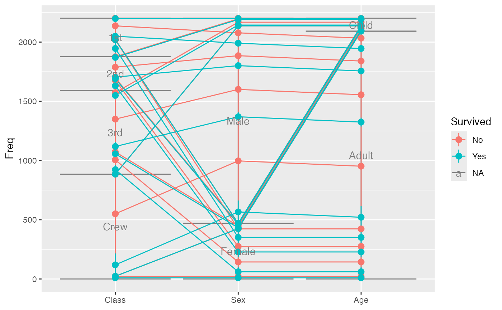
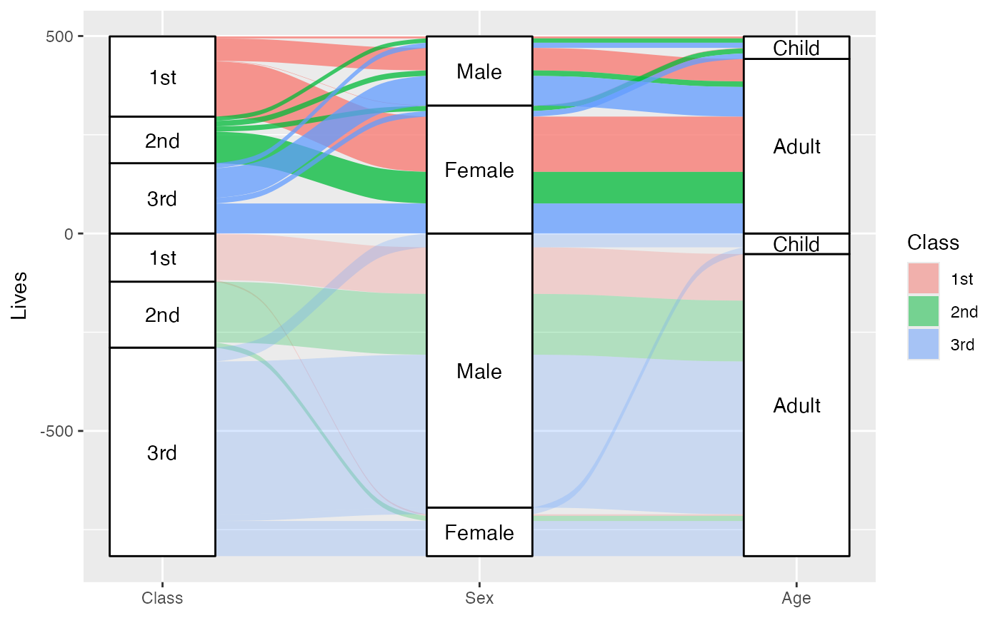
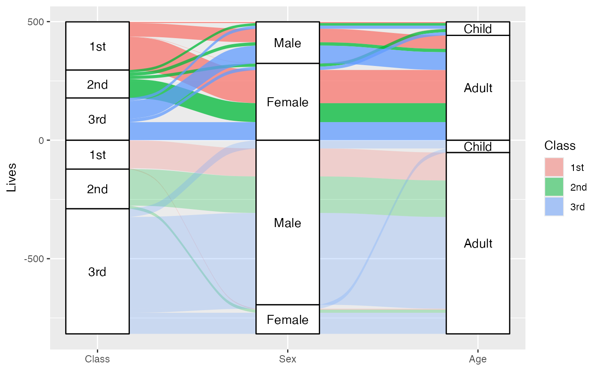

Given a dataset with alluvial structure, stat_alluvium calculates the
centroids (x and y) and heights (ymin and ymax) of the lodes, the
intersections of the alluvia with the strata. It leverages the group
aesthetic for plotting purposes (for now).
Usage
stat_alluvium(
mapping = NULL,
data = NULL,
geom = "alluvium",
position = "identity",
decreasing = NULL,
reverse = NULL,
absolute = NULL,
discern = FALSE,
negate.strata = NULL,
aggregate.y = NULL,
cement.alluvia = NULL,
lode.guidance = NULL,
lode.ordering = NULL,
aes.bind = NULL,
infer.label = FALSE,
min.y = NULL,
max.y = NULL,
na.rm = FALSE,
show.legend = NA,
inherit.aes = TRUE,
...
)Arguments
- mapping
Set of aesthetic mappings created by
aes(). If specified andinherit.aes = TRUE(the default), it is combined with the default mapping at the top level of the plot. You must supplymappingif there is no plot mapping.- data
The data to be displayed in this layer. There are three options:
If
NULL, the default, the data is inherited from the plot data as specified in the call toggplot().A
data.frame, or other object, will override the plot data. All objects will be fortified to produce a data frame. Seefortify()for which variables will be created.A
functionwill be called with a single argument, the plot data. The return value must be adata.frame, and will be used as the layer data. Afunctioncan be created from aformula(e.g.~ head(.x, 10)).- geom
The geometric object to use display the data; override the default.
- position
Position adjustment, either as a string naming the adjustment (e.g.
"jitter"to useposition_jitter), or the result of a call to a position adjustment function. Use the latter if you need to change the settings of the adjustment.- decreasing
Logical; whether to arrange the strata at each axis in the order of the variable values (
NA, the default), in ascending order of totals (largest on top,FALSE), or in descending order of totals (largest on bottom,TRUE).- reverse
Logical; if
decreasingisNA, whether to arrange the strata at each axis in the reverse order of the variable values, so that they match the order of the values in the legend. Ignored ifdecreasingis notNA. Defaults toTRUE.- absolute
Logical; if some cases or strata are negative, whether to arrange them (respecting
decreasingandreverse) using negative or absolute values ofy.- discern
Passed to
to_lodes_form()ifdatais in alluvia format.- negate.strata
A vector of values of the
stratumaesthetic to be treated as negative (will ignore missing values with a warning).- aggregate.y
Deprecated alias for
cement.alluvia.- cement.alluvia
Logical value indicating whether to aggregate
yvalues over equivalent alluvia before computing lode and flow positions.- lode.guidance
The function to prioritize the axis variables for ordering the lodes within each stratum, or else a character string identifying the function. Character options are "zigzag", "frontback", "backfront", "forward", and "backward" (see
lode-guidance-functions).- lode.ordering
Deprecated in favor of the
orderaesthetic. A list (of length the number of axes) of integer vectors (each of length the number of rows ofdata) or NULL entries (indicating no imposed ordering), or else a numeric matrix of corresponding dimensions, giving the preferred ordering of alluvia at each axis. This will be used to order the lodes within each stratum by sorting the lodes first by stratum, then by the provided vectors, and lastly by remaining factors (if the vectors contain duplicate entries and therefore do not completely determine the lode orderings).- aes.bind
At what grouping level, if any, to prioritize differentiation aesthetics when ordering the lodes within each stratum. Defaults to
"none"(no aesthetic binding) with intermediate option"flows"to bind aesthetics after stratifying by axes linked to the index axis (the one adjacent axis instat_flow(); all remaining axes instat_alluvium()) and strongest option"alluvia"to bind aesthetics after stratifying by the index axis but before stratifying by linked axes (only available forstat_alluvium()). Stratification by any axis is done with respect to the strata at that axis, after separating positive and negative strata, consistent with the values ofdecreasing,reverse, andabsolute. Thus, if"none", then lode orderings will not depend on aesthetic variables. All aesthetic variables are used, in the order in which they are specified inaes().- infer.label
Logical; whether to assign the
stratumoralluviumvariable to thelabelaesthetic. Defaults toFALSE, and requires that nolabelaesthetic is assigned. This parameter is intended for use only with data in alluva form, which are converted to lode form before the statistical transformation. Deprecated; useggplot2::after_stat()instead.- min.y, max.y
Numeric; bounds on the heights of the strata to be rendered. Use these bounds to exclude strata outside a certain range, for example when labeling strata using
ggplot2::geom_text().- na.rm
Logical: if
FALSE, the default,NAlodes are not included; ifTRUE,NAlodes constitute a separate category, plotted in grey (regardless of the color scheme).- show.legend
logical. Should this layer be included in the legends?
NA, the default, includes if any aesthetics are mapped.FALSEnever includes, andTRUEalways includes. It can also be a named logical vector to finely select the aesthetics to display.- inherit.aes
If
FALSE, overrides the default aesthetics, rather than combining with them. This is most useful for helper functions that define both data and aesthetics and shouldn't inherit behaviour from the default plot specification, e.g.borders().- ...
Additional arguments passed to
ggplot2::layer().
Aesthetics
stat_alluvium, stat_flow, and stat_stratum require one
of two sets of aesthetics:
xand at least one ofalluviumandstratumany number of
axis[0-9]*(axis1,axis2, etc.)
Use x, alluvium, and/or stratum for data in lodes format
and axis[0-9]* for data in alluvia format (see alluvial-data).
Arguments to parameters inconsistent with the format will be ignored.
Additionally, each stat_*() accepts the following optional
aesthetics:
yweightordergrouplabel
y controls the heights of the alluvia,
and may be aggregated across equivalent observations.
weight applies to the computed variables (see that section below)
but does not affect the positional aesthetics.
order, recognized by stat_alluvium() and stat_flow(), is used to
arrange the lodes within each stratum. It tolerates duplicates and takes
precedence over the differentiation aesthetics (when aes.bind is not
"none") and lode guidance with respect to the remaining axes. (It replaces
the deprecated parameter lode.ordering.)
group is used internally; arguments are ignored.
label is used to label the strata or lodes and must take a unique value
across the observations within each stratum or lode.
These and any other aesthetics are aggregated as follows:
Numeric aesthetics, including y, are summed.
Character and factor aesthetics, including label,
are assigned to strata or lodes provided they take unique values across the
observations within each (and are otherwise assigned NA).
Computed variables
These can be used with
ggplot2::after_stat() to control aesthetic evaluation.
nnumber of cases in lode
countcumulative weight of lode
propweighted proportion of lode
stratumvalue of variable used to define strata
depositorder in which (signed) strata are deposited
lodelode label distilled from alluvia (
stat_alluvium()andstat_flow()only)flowdirection of flow
"to"or"from"from its axis (stat_flow()only)
The numerical variables n, count, and prop are calculated after the
data are grouped by x and weighted by weight (in addition to y).
The integer variable deposit is used internally to sort the data before
calculating heights. The character variable lode is obtained from
alluvium according to distill.
Package options
stat_stratum, stat_alluvium, and stat_flow order strata and lodes
according to the values of several parameters, which must be held fixed
across every layer in an alluvial plot. These package-specific options set
global values for these parameters that will be defaulted to when not
manually set:
ggalluvial.decreasing(eachstat_*): defaults toNA.ggalluvial.reverse(eachstat_*): defaults toTRUE.ggalluvial.absolute(eachstat_*): defaults toTRUE.ggalluvial.cement.alluvia(stat_alluvium): defaults toFALSE.ggalluvial.lode.guidance(stat_alluvium): defaults to"zigzag".ggalluvial.aes.bind(stat_alluviumandstat_flow): defaults to"none".
See base::options() for how to use options.
Defunct parameters
The previously defunct parameters weight and aggregate.wts have been
discontinued. Use y and cement.alluvia instead.
See also
ggplot2::layer() for additional arguments and geom_alluvium(),
geom_lode(), and geom_flow() for the corresponding geoms.
Other alluvial stat layers:
stat_flow(),
stat_stratum()
Examples
# illustrate positioning
ggplot(as.data.frame(Titanic),
aes(y = Freq,
axis1 = Class, axis2 = Sex, axis3 = Age,
color = Survived)) +
stat_stratum(geom = "errorbar") +
geom_line(stat = "alluvium") +
stat_alluvium(geom = "pointrange") +
geom_text(stat = "stratum", aes(label = after_stat(stratum))) +
scale_x_discrete(limits = c("Class", "Sex", "Age"))

# lode ordering examples
gg <- ggplot(as.data.frame(Titanic),
aes(y = Freq,
axis1 = Class, axis2 = Sex, axis3 = Age)) +
geom_stratum() +
geom_text(stat = "stratum", aes(label = after_stat(stratum))) +
scale_x_discrete(limits = c("Class", "Sex", "Age"))
# use of lode controls
gg + geom_flow(aes(fill = Survived, alpha = Sex), stat = "alluvium",
lode.guidance = "forward")
#> Warning: Using alpha for a discrete variable is not advised.
 # prioritize aesthetic binding
gg + geom_flow(aes(fill = Survived, alpha = Sex), stat = "alluvium",
aes.bind = "alluvia", lode.guidance = "forward")
#> Warning: Using alpha for a discrete variable is not advised.
# prioritize aesthetic binding
gg + geom_flow(aes(fill = Survived, alpha = Sex), stat = "alluvium",
aes.bind = "alluvia", lode.guidance = "forward")
#> Warning: Using alpha for a discrete variable is not advised.
 # use of custom lode order
gg + geom_flow(aes(fill = Survived, alpha = Sex, order = sample(x = 32)),
stat = "alluvium")
#> Warning: Ignoring unknown aesthetics: order
#> Warning: Using alpha for a discrete variable is not advised.
# use of custom lode order
gg + geom_flow(aes(fill = Survived, alpha = Sex, order = sample(x = 32)),
stat = "alluvium")
#> Warning: Ignoring unknown aesthetics: order
#> Warning: Using alpha for a discrete variable is not advised.
 # use of custom luide guidance function
lode_custom <- function(n, i) {
stopifnot(n == 3)
switch(
i,
`1` = 1:3,
`2` = c(2, 3, 1),
`3` = 3:1
)
}
gg + geom_flow(aes(fill = Survived, alpha = Sex), stat = "alluvium",
aes.bind = "flow", lode.guidance = lode_custom)
#> Warning: Using alpha for a discrete variable is not advised.
# omit missing elements & reverse the `y` axis
ggplot(ggalluvial::majors,
aes(x = semester, stratum = curriculum, alluvium = student, y = 1)) +
geom_alluvium(fill = "darkgrey", na.rm = TRUE) +
geom_stratum(aes(fill = curriculum), color = NA, na.rm = TRUE) +
theme_bw() +
scale_y_reverse()
# use of custom luide guidance function
lode_custom <- function(n, i) {
stopifnot(n == 3)
switch(
i,
`1` = 1:3,
`2` = c(2, 3, 1),
`3` = 3:1
)
}
gg + geom_flow(aes(fill = Survived, alpha = Sex), stat = "alluvium",
aes.bind = "flow", lode.guidance = lode_custom)
#> Warning: Using alpha for a discrete variable is not advised.
# omit missing elements & reverse the `y` axis
ggplot(ggalluvial::majors,
aes(x = semester, stratum = curriculum, alluvium = student, y = 1)) +
geom_alluvium(fill = "darkgrey", na.rm = TRUE) +
geom_stratum(aes(fill = curriculum), color = NA, na.rm = TRUE) +
theme_bw() +
scale_y_reverse()
 # \donttest{
# alluvium cementation examples
gg <- ggplot(ggalluvial::majors,
aes(x = semester, stratum = curriculum, alluvium = student,
fill = curriculum)) +
geom_stratum()
# diagram with outlined alluvia and labels
gg + geom_flow(stat = "alluvium", color = "black") +
geom_text(aes(label = after_stat(lode)), stat = "alluvium")
# cemented diagram with default distillation (first most common alluvium)
gg +
geom_flow(stat = "alluvium", color = "black", cement.alluvia = TRUE) +
geom_text(aes(label = after_stat(lode)), stat = "alluvium",
cement.alluvia = TRUE)
# \donttest{
# alluvium cementation examples
gg <- ggplot(ggalluvial::majors,
aes(x = semester, stratum = curriculum, alluvium = student,
fill = curriculum)) +
geom_stratum()
# diagram with outlined alluvia and labels
gg + geom_flow(stat = "alluvium", color = "black") +
geom_text(aes(label = after_stat(lode)), stat = "alluvium")
# cemented diagram with default distillation (first most common alluvium)
gg +
geom_flow(stat = "alluvium", color = "black", cement.alluvia = TRUE) +
geom_text(aes(label = after_stat(lode)), stat = "alluvium",
cement.alluvia = TRUE)
 # cemented diagram with custom label distillation
gg +
geom_flow(stat = "alluvium", color = "black", cement.alluvia = TRUE) +
geom_text(aes(label = after_stat(lode)), stat = "alluvium",
cement.alluvia = TRUE,
distill = function(x) paste(x, collapse = "; "))
# cemented diagram with custom label distillation
gg +
geom_flow(stat = "alluvium", color = "black", cement.alluvia = TRUE) +
geom_text(aes(label = after_stat(lode)), stat = "alluvium",
cement.alluvia = TRUE,
distill = function(x) paste(x, collapse = "; "))
 # }
# \donttest{
data(babynames, package = "babynames")
#> Error in find.package(package, lib.loc, verbose = verbose): there is no package called ‘babynames’
# a discontiguous alluvium
bn <- subset(babynames, prop >= .01 & sex == "F" & year > 1962 & year < 1968)
#> Error: object 'babynames' not found
ggplot(data = bn,
aes(x = year, alluvium = name, y = prop)) +
geom_alluvium(aes(fill = name, color = name == "Tammy"),
decreasing = TRUE, show.legend = FALSE) +
scale_color_manual(values = c("#00000000", "#000000"))
#> Error: object 'bn' not found
# expanded to include missing values
bn2 <- merge(bn,
expand.grid(year = unique(bn$year), name = unique(bn$name)),
all = TRUE)
#> Error: object 'bn' not found
ggplot(data = bn2,
aes(x = year, alluvium = name, y = prop)) +
geom_alluvium(aes(fill = name, color = name == "Tammy"),
decreasing = TRUE, show.legend = FALSE) +
scale_color_manual(values = c("#00000000", "#000000"))
#> Error: object 'bn2' not found
# with missing values filled in with zeros
bn2$prop[is.na(bn2$prop)] <- 0
#> Error: object 'bn2' not found
ggplot(data = bn2,
aes(x = year, alluvium = name, y = prop)) +
geom_alluvium(aes(fill = name, color = name == "Tammy"),
decreasing = TRUE, show.legend = FALSE) +
scale_color_manual(values = c("#00000000", "#000000"))
#> Error: object 'bn2' not found
# }
# use negative y values to encode deaths versus survivals
titanic <- as.data.frame(Titanic)
titanic <- transform(titanic, Lives = Freq * (-1) ^ (Survived == "No"))
ggplot(subset(titanic, Class != "Crew"),
aes(axis1 = Class, axis2 = Sex, axis3 = Age, y = Lives)) +
geom_alluvium(aes(alpha = Survived, fill = Class), absolute = FALSE) +
geom_stratum(absolute = FALSE) +
geom_text(stat = "stratum", aes(label = after_stat(stratum)),
absolute = FALSE) +
scale_x_discrete(limits = c("Class", "Sex", "Age"), expand = c(.1, .05)) +
scale_alpha_discrete(range = c(.25, .75), guide = "none")
#> Warning: Using alpha for a discrete variable is not advised.

# faceting with common alluvia
ggplot(titanic, aes(y = Freq, axis1 = Class, axis2 = Sex, axis3 = Age)) +
facet_wrap(~ Survived) +
geom_alluvium() +
geom_stratum() +
geom_text(stat = "stratum", aes(label = after_stat(stratum)))
ggplot(transform(alluvial::Refugees, id = 1),
aes(y = refugees, x = year, alluvium = id)) +
facet_wrap(~ country) +
geom_alluvium(alpha = .75, color = "darkgrey") +
scale_x_continuous(breaks = seq(2004, 2012, 4))
# }
# \donttest{
data(babynames, package = "babynames")
#> Error in find.package(package, lib.loc, verbose = verbose): there is no package called ‘babynames’
# a discontiguous alluvium
bn <- subset(babynames, prop >= .01 & sex == "F" & year > 1962 & year < 1968)
#> Error: object 'babynames' not found
ggplot(data = bn,
aes(x = year, alluvium = name, y = prop)) +
geom_alluvium(aes(fill = name, color = name == "Tammy"),
decreasing = TRUE, show.legend = FALSE) +
scale_color_manual(values = c("#00000000", "#000000"))
#> Error: object 'bn' not found
# expanded to include missing values
bn2 <- merge(bn,
expand.grid(year = unique(bn$year), name = unique(bn$name)),
all = TRUE)
#> Error: object 'bn' not found
ggplot(data = bn2,
aes(x = year, alluvium = name, y = prop)) +
geom_alluvium(aes(fill = name, color = name == "Tammy"),
decreasing = TRUE, show.legend = FALSE) +
scale_color_manual(values = c("#00000000", "#000000"))
#> Error: object 'bn2' not found
# with missing values filled in with zeros
bn2$prop[is.na(bn2$prop)] <- 0
#> Error: object 'bn2' not found
ggplot(data = bn2,
aes(x = year, alluvium = name, y = prop)) +
geom_alluvium(aes(fill = name, color = name == "Tammy"),
decreasing = TRUE, show.legend = FALSE) +
scale_color_manual(values = c("#00000000", "#000000"))
#> Error: object 'bn2' not found
# }
# use negative y values to encode deaths versus survivals
titanic <- as.data.frame(Titanic)
titanic <- transform(titanic, Lives = Freq * (-1) ^ (Survived == "No"))
ggplot(subset(titanic, Class != "Crew"),
aes(axis1 = Class, axis2 = Sex, axis3 = Age, y = Lives)) +
geom_alluvium(aes(alpha = Survived, fill = Class), absolute = FALSE) +
geom_stratum(absolute = FALSE) +
geom_text(stat = "stratum", aes(label = after_stat(stratum)),
absolute = FALSE) +
scale_x_discrete(limits = c("Class", "Sex", "Age"), expand = c(.1, .05)) +
scale_alpha_discrete(range = c(.25, .75), guide = "none")
#> Warning: Using alpha for a discrete variable is not advised.

# faceting with common alluvia
ggplot(titanic, aes(y = Freq, axis1 = Class, axis2 = Sex, axis3 = Age)) +
facet_wrap(~ Survived) +
geom_alluvium() +
geom_stratum() +
geom_text(stat = "stratum", aes(label = after_stat(stratum)))
ggplot(transform(alluvial::Refugees, id = 1),
aes(y = refugees, x = year, alluvium = id)) +
facet_wrap(~ country) +
geom_alluvium(alpha = .75, color = "darkgrey") +
scale_x_continuous(breaks = seq(2004, 2012, 4))